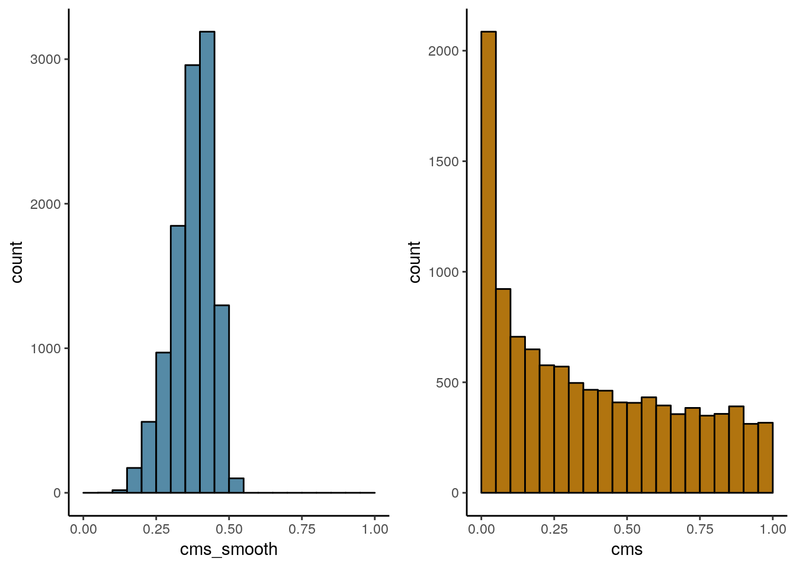
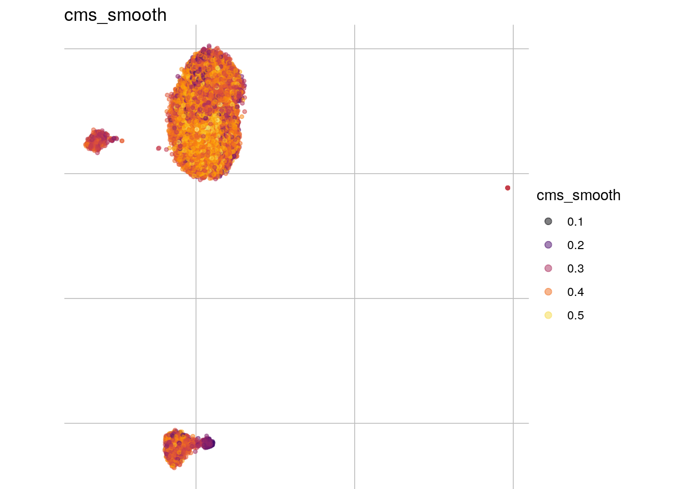
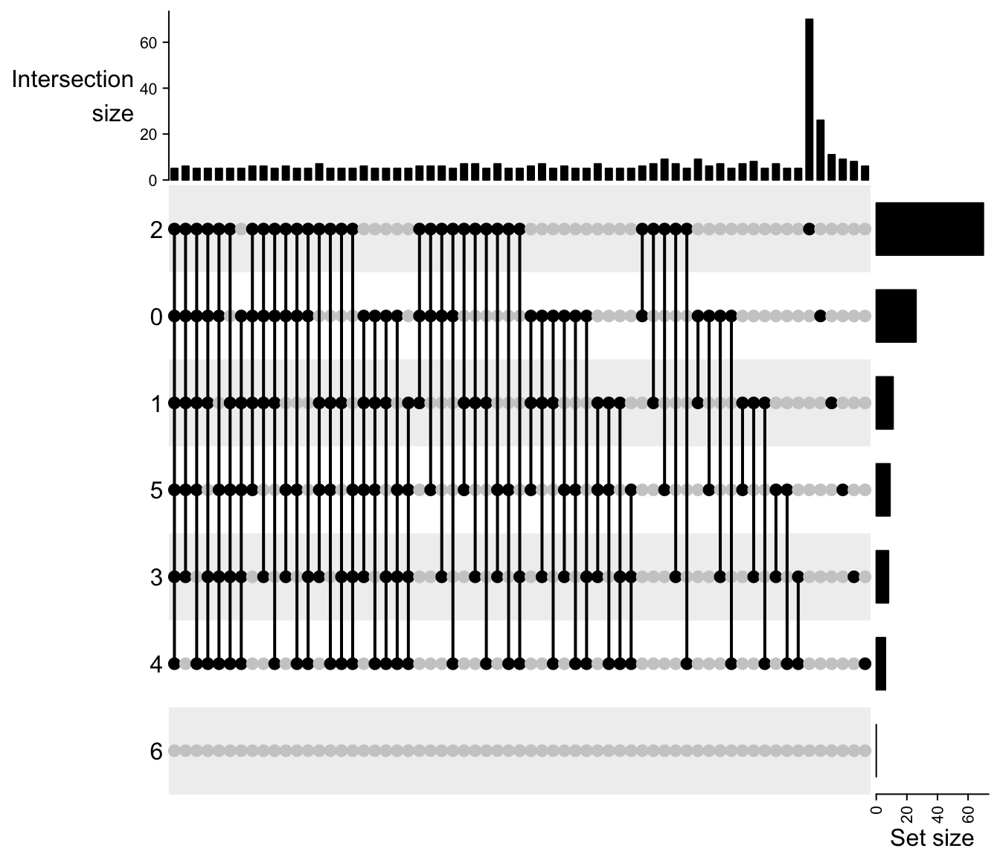
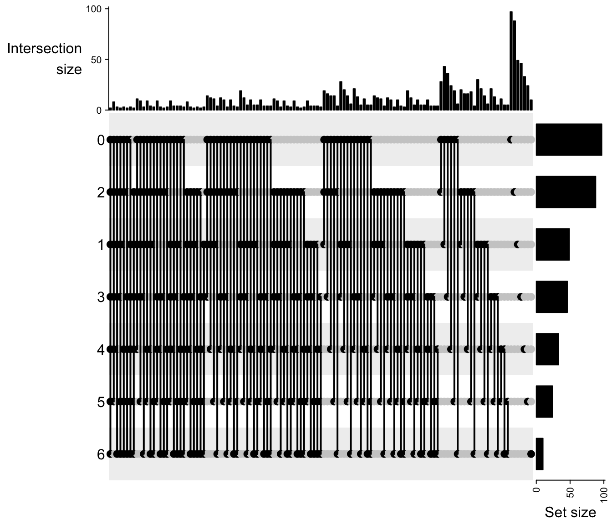
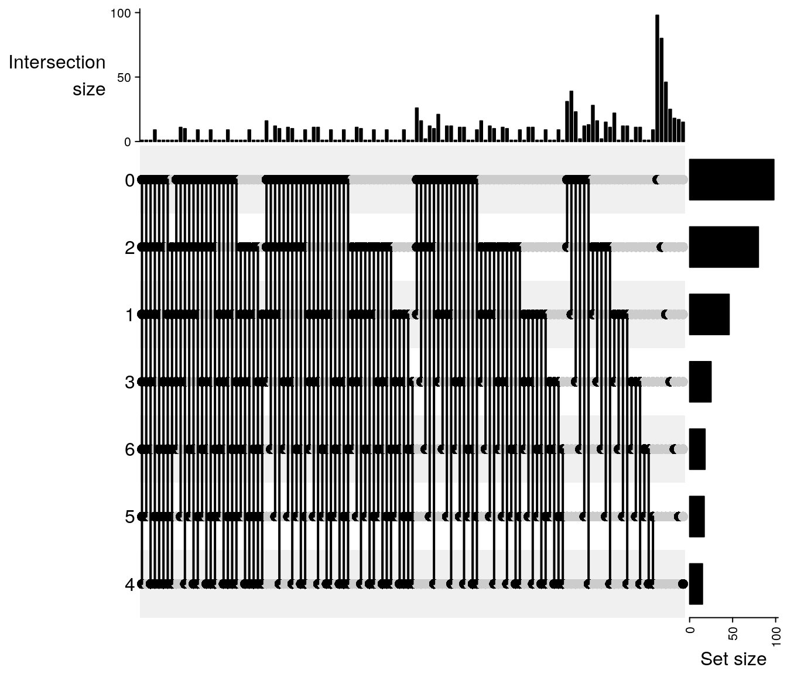
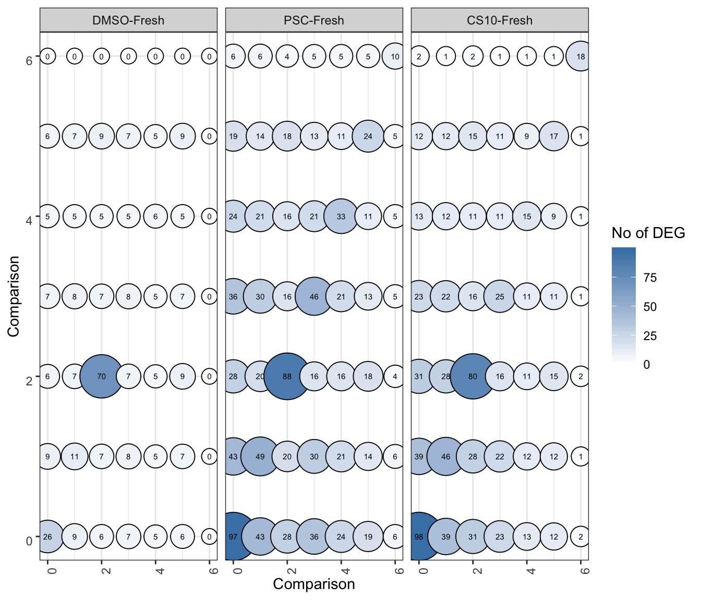

pbmc_media_storage
almutlue
2019-05-28
Last updated: 2019-06-10
Checks: 6 0
Knit directory: characterize_batches/
This reproducible R Markdown analysis was created with workflowr (version 1.3.0). The Checks tab describes the reproducibility checks that were applied when the results were created. The Past versions tab lists the development history.
Great! Since the R Markdown file has been committed to the Git repository, you know the exact version of the code that produced these results.
Great job! The global environment was empty. Objects defined in the global environment can affect the analysis in your R Markdown file in unknown ways. For reproduciblity it’s best to always run the code in an empty environment.
The command set.seed(20190528) was run prior to running the code in the R Markdown file. Setting a seed ensures that any results that rely on randomness, e.g. subsampling or permutations, are reproducible.
Great job! Recording the operating system, R version, and package versions is critical for reproducibility.
Nice! There were no cached chunks for this analysis, so you can be confident that you successfully produced the results during this run.
Great! You are using Git for version control. Tracking code development and connecting the code version to the results is critical for reproducibility. The version displayed above was the version of the Git repository at the time these results were generated.
Note that you need to be careful to ensure that all relevant files for the analysis have been committed to Git prior to generating the results (you can use wflow_publish or wflow_git_commit). workflowr only checks the R Markdown file, but you know if there are other scripts or data files that it depends on. Below is the status of the Git repository when the results were generated:
Ignored files:
Ignored: .DS_Store
Ignored: .Rhistory
Ignored: .Rproj.user/
Untracked files:
Untracked: analysis/pancreas.Rmd
Untracked: code/diagnostic_plots.R
Untracked: code/pancreas_preprocessing.R
Untracked: data/PBMC_media_merged_clusters_seurat.rds
Untracked: data/csf_media.rds
Untracked: data/pancreas.rds
Untracked: data/pbmc2_media.rds
Untracked: data/pbmc_media.rds
Untracked: output/cms_cellBench.rds
Untracked: output/cms_csf_media_storage.rds
Untracked: output/cms_csf_patient.rds
Untracked: output/cms_pbmc2_media_storage.rds
Untracked: output/cms_pbmc2_patient.rds
Untracked: output/cms_pbmc_media_storage.rds
Untracked: output/limma_cellBench.rds
Untracked: output/limma_csf_media_storage.rds
Untracked: output/limma_csf_patient.rds
Untracked: output/limma_pbmc2_media_storage.rds
Untracked: output/limma_pbmc2_patient.rds
Untracked: output/limma_pbmc_media_storage.rds
Untracked: output/pbmc_media_limma_results.RData
Untracked: output/pbmc_media_upset_data.RData
Untracked: output/summary_cellBench.rds
Untracked: output/summary_csf_media_storage.rds
Untracked: output/summary_csf_patient.rds
Untracked: output/summary_pbmc2_media_storage.rds
Untracked: output/summary_pbmc2_patient.rds
Untracked: output/summary_pbmc_media_storage.rds
Untracked: output/upset_cellBench.rds
Untracked: output/upset_csf_media_storage.rds
Untracked: output/upset_csf_patient.rds
Untracked: output/upset_pbmc2_media_storage.rds
Untracked: output/upset_pbmc2_patient.rds
Untracked: output/upset_pbmc_media_storage.rds
Untracked: output/vp_cellBench.rds
Untracked: output/vp_csf_media_storage.rds
Untracked: output/vp_csf_patient.rds
Untracked: output/vp_pbmc2_media_storage.rds
Untracked: output/vp_pbmc2_patient.rds
Untracked: output/vp_pbmc_media_storage.rds
Note that any generated files, e.g. HTML, png, CSS, etc., are not included in this status report because it is ok for generated content to have uncommitted changes.
These are the previous versions of the R Markdown and HTML files. If you’ve configured a remote Git repository (see ?wflow_git_remote), click on the hyperlinks in the table below to view them.
| File | Version | Author | Date | Message |
|---|---|---|---|---|
| Rmd | 9c8da2b | zjanna | 2019-06-10 | wflow_publish(“analysis/pbmc_media_storage.Rmd”) |
| html | 0f22194 | almutlue | 2019-06-06 | Build site. |
| Rmd | 063f9aa | almutlue | 2019-06-06 | small fix |
| html | 0671ba7 | zjanna | 2019-06-05 | Build site. |
| html | 58589c3 | zjanna | 2019-06-05 | Build site. |
| Rmd | 6e7feca | zjanna | 2019-06-05 | wflow_publish(“analysis/pbmc_media_storage.Rmd”) |
| html | 0658ce6 | zjanna | 2019-06-03 | Build site. |
| html | ecdc46e | Asia | 2019-06-03 | Build site. |
| Rmd | 172eb85 | Asia | 2019-06-03 | add de |
| html | 239ed94 | almutlue | 2019-05-31 | Build site. |
| Rmd | 671e865 | almutlue | 2019-05-31 | add cellbench |
| html | 072384b | almutlue | 2019-05-28 | Build site. |
| Rmd | 8b934db | almutlue | 2019-05-28 | Add pbmc analysis |
Different media conditions
Pbmc - media storage
PBMC dataset from Roche that has been collected to test the influence of media storage on sequencing. It includes 11045 human PBMCs from the same sample, split into 4 batches. All batches have been sequenced together and libraries have been prepared together, but 3 batches have been stored in different media DMSO, CSF and PSC and frozen for 7 days before sequencing. The last batch contains PBMCs from freshly collected blood. Differences between these batches should all derive from media storage, so conditional sources.
suppressPackageStartupMessages({
library(CellBench)
library(scater)
library(jcolors)
library(CellMixS)
library(gridExtra)
library(purrr)
library(jcolors)
library(here)
library(tidyr)
library(dplyr)
library(stringr)
library(variancePartition)
library(diffcyt)
library(ComplexHeatmap)
})# data
data_path <- here::here("data")
out_path <- here::here("output")
code_path <- here::here("code")
dataset_name <- "pbmc_media_storage"
# raw data
#For preprocessing and quality control please check: /code/pbmc_media.rmd
# sce <- readRDS(paste0(data_path, "/pbmc_media.rds"))
# sce <- runUMAP(sce)
# saveRDS(sce,file=paste0(data_path, "/pbmc_media.rds"))
sce <- readRDS(paste0(data_path, "/pbmc_media.rds"))
colData(sce)[,'sample_type'] <- gsub("PBMCs frozen in ","",
colData(sce)[,'sample_type'])
colData(sce)[,'sample_type'] <- gsub(" 7 ?days","",
colData(sce)[,'sample_type'])
colData(sce)[,'sample_type'] <- gsub(" PBMCs","",
colData(sce)[,'sample_type'])
cols <-c(c(jcolors('pal6'),jcolors('pal8'))[c(1,8,14,5,2:4,6,7,9:13,15:20)],jcolors('pal4'))
names(cols) <- c()
#param
MultiSample = FALSE
#variables
batch <- "dataset"
celltype <- "cluster.merged"
sample <- NA
table(colData(sce)[,'sample_type'])
CS10 DMSO Fresh PSC
2199 3478 3459 1909 #contrast
cont <- list("DMSO-Fresh" = c(0,1,-1,0),
"PSC-Fresh" = c(0,0,-1,1),
"CS10-Fresh" = c(1,0,-1,0))Visualize batch effect
feature_list <- c("sample_type", "cluster.merged", "cluster.main")
lapply(feature_list, function(feature_name){
visGroup(sce, feature_name, dim_red= "UMAP")
})[[1]]
[[2]]
[[3]]
Size/Strength of the batch effcet
How much of the variance within data can be attributed to the batch effect?
VariancePartitioning
expr <- as.matrix(assays(sce)$logcounts)
meta_sub <- as.data.frame(colData(sce)[, c(celltype, batch)])
form <- as.formula(paste0("~ (1|", celltype, ") + (1|", batch, ")"))
#varPart <- fitExtractVarPartModel(expr, form, meta_sub)
#Sort variables (i.e. columns) by median fraction# of variance explained
#vp <- varPart
#saveRDS(vp, paste0(out_path,"/vp_", dataset_name, ".rds"))
vp <- readRDS(paste0(out_path,"/vp_", dataset_name, ".rds"))
vp_names <- rownames(vp)
vp <-vp %>% dplyr::mutate(gene= vp_names) %>% dplyr::arrange(-!! rlang::parse_expr(batch))Warning in class(x) <- c(subclass, tibble_class): Setting class(x) to
multiple strings ("tbl_df", "tbl", ...); result will no longer be an S4
objectvp_sub <- vp[1:3] %>% set_rownames(vp$gene)
#plot
plotPercentBars( vp_sub[1:10,] )
plotVarPart( vp_sub )
Summarize variance partitioning
#How many genes have a variance component affected by the batch variable with more than 1%
n_batch_gene <- as_tibble(vp) %>% dplyr::filter(!! rlang::parse_expr(batch) > 0.01) %>% nrow()
n_batch_gene10 <- as_tibble(vp) %>% dplyr::filter(!! rlang::parse_expr(batch) > 0.1) %>% nrow()
n_celltype_gene <- as_tibble(vp) %>% dplyr::filter(!! rlang::parse_expr(celltype)> 0.01) %>% nrow()
n_rel <- n_batch_gene/n_celltype_gene
#The mean percentage of the variance that is explained by the batch effect independent from the celltype
m_batch <- mean(vp[,batch])
m_celltype <- mean(vp[,celltype])
m_rel <- m_batch/m_celltype
#The median percentage of the variance that is explained by the batch effect independent from the celltype
me_batch <- median(vp[, batch])
me_celltype <- median(vp[, celltype])
me_rel <- me_batch/me_celltypeCelltype specificity
Celltype abundance
meta_tib <- as_tibble(colData(sce)) %>% group_by_at(c(batch, celltype)) %>% summarize(n = n()) %>% dplyr::mutate(cell_freq = n / sum(n))
plot_abundance <- function(cluster_var, tib, x_var){
meta_df <- as.data.frame(eval(tib))
p <-ggplot(data=meta_df, aes_string(x=x_var, y="cell_freq", fill = cluster_var)) +
geom_bar(stat="identity") + scale_fill_manual(values=cols)
p + coord_flip() + theme_minimal()
}
plot_abundance(cluster_var = celltype, tib = meta_tib, x_var = batch)
Celltype abundance - relative difference in abundances
meta_tib <- as_tibble(colData(sce)) %>% group_by_at(c(batch, celltype)) %>%
summarize(n = n()) %>% spread_(batch,"n")
meta_df <- as.data.frame(eval(meta_tib))[,-1]
meta_comb<-combn(meta_df,2,simplify=FALSE)
res<-lapply(meta_comb,function(x){
cond1<-names(x)[1]
cond2<-names(x)[2]
rel_abund_diff<-mapply(function(cond1,cond2) abs(cond1-cond2)/(cond1+cond2), x[,cond1], x[,cond2])
rel_abund_diff
})
mean_rel_abund_diff<-mean(unlist(res))
min_rel_abund_diff<-min(unlist(res))
max_rel_abund_diff<-max(unlist(res))Test for significant changes in celltype abundances. Diffcyt (skip for datasets without replicates)
if(MultiSample){
#colData
col_tib <- as_tibble(colData(sce)) %>% group_by_at(c(sample, batch)) %>% summarize()
col_dat <- data.frame("sample_id" = col_tib[,sample], "group_id" = col_tib[,batch]) %>% set_rownames(levels(as.factor(colData(sce)[,sample])))
#create desing matrix
design <- createDesignMatrix(
col_dat, cols_design = c(batch)
)
#create contrast
n_contrast <- length(levels(as.factor(colData(sce)[,batch])))
contrast <- diag(n_contrast)
#create summarizedExperiment for cluster abundance (rows = cluster, columns= samples)
cluster_counts <- as_tibble(colData(sce)) %>% group_by_at(c(sample, celltype)) %>% summarize(n=n()) %>% spread_(sample, "n")
cluster_count <- as.matrix(cluster_counts[,-1])
rownames(cluster_count) <- unlist(cluster_counts[, celltype])
#rowData
row_dat <- as_tibble(colData(sce)) %>% group_by_at(celltype) %>% summarize(n=n()) %>% set_colnames(c("cluster_id", "n_cells"))
se <- SummarizedExperiment(list("counts" = cluster_count), rowData= as.data.frame(row_dat), colData= col_dat)
#differential abundance
res_DA <- testDA_edgeR(se, design, contrast)
#summarize - number of differential abundance cluster
n_da_cluster <- length(which(rowData(res_DA)$p_adj < 0.01))
per_da_cluster <- n_da_cluster/length(levels(as.factor(colData(sce)[,celltype])))
}else{
per_da_cluster <- NA
n_da_cluster<-0
}Count distribution
Do the overall counts distribution vary between batches? Clusterwise ploting?
#sample an cluster ids
sids <- levels(as.factor(colData(sce)[, batch]))
names(sids) <- sids
cids <- levels(as.factor(colData(sce)[, celltype]))
names(cids) <- cids
#mean gene expression by sample and cluster
mean_list <- lapply(sids, function(batch_var){
mean_cluster <- lapply(cids, function(cluster_var){
counts_sc <- as.matrix(logcounts(
sce[, colData(sce)[, batch] %in% batch_var & colData(sce)[, celltype] %in% cluster_var]))
})
mean_c <- mean_cluster %>% map(rowMeans) %>% bind_rows %>%
dplyr::mutate(gene=rownames(sce)) %>% gather(cluster, logcounts, levels(as.factor(colData(sce)[,celltype])))
})
mean_expr <- mean_list %>% bind_rows(.id= "sample")
ggplot(mean_expr, aes(x=logcounts, colour=sample)) + geom_density(alpha=.3) +
theme_classic() +
facet_wrap( ~ cluster, ncol = 3) +
scale_colour_manual(values = cols[c(1:3,7)]) +
scale_x_continuous(limits = c(0, 7))
#number of cluster with differnt batch distributions
per_dist <- 1Mean expression batch vs each other
#mean expression
mean_expr <- mean_list %>% bind_rows(.id = "sample" ) %>% spread(sample, logcounts)
batch_all <- levels(as.factor(colData(sce)[,batch]))
lapply(batch_all, function(batch_var){
batch_var_2 <- batch_all[-which(batch_all %in% batch_var)]
lapply(batch_var_2, function(batch_var_3){
ggplot(mean_expr, aes_string(x=batch_var, y=batch_var_3)) +
geom_point(alpha=.3, aes(color=cluster)) +
ggtitle(batch_var) + geom_abline(slope = 1) + coord_fixed() +
facet_wrap( ~ cluster, ncol = 3) +
scale_color_manual(values=cols)
})
})[[1]]
[[1]][[1]]
[[1]][[2]]
[[1]][[3]]
[[2]]
[[2]][[1]]
[[2]][[2]]
[[2]][[3]]
[[3]]
[[3]][[1]]
[[3]][[2]]
[[3]][[3]]
[[4]]
[[4]][[1]]
[[4]][[2]]
[[4]][[3]]
Cellspecific mixing score
Calculate cms
# sce <- cms(sce, group = batch, k = 120, cell_min = 10, n_dim = 10)
#saveRDS(sce, paste0(out_path, "/cms_", dataset_name, ".rds"))
sce <- readRDS(paste0(out_path, "/cms_", dataset_name, ".rds"))
visHist(sce, n_col = 2)
visMetric(sce, metric_var = "cms_smooth", dim_red = "UMAP")
#summarize
mean_cms <- mean(sce$cms)
n_cms_0.01 <- length(which(sce$cms < 0.01))
cluster_mean_cms <- as_tibble(colData(sce)) %>% group_by_at(celltype) %>% summarize(cms_mean = mean(cms))
var_cms <- sd(cluster_mean_cms$cms_mean)DE analysis
Calculate DEG
clust <- as.factor(colData(sce)[,celltype])
# n_cells <- table(clust,colData(sce)[,sample])
kids<-levels(clust)
names(kids) <- kids
group<-as.factor(colData(sce)[,batch])
cs <- names(cont)
names(cs) <- cs
es<- expr
ctype <- "contrast"
res_df <- function(k, tt, ct, c) {
df <- data.frame(
gene = rownames(tt), cluster_id = k, tt,
row.names = NULL, stringsAsFactors = FALSE)
df[[ct]] <- c
return(df)
}
doDE <- function(x,lfc_cutoff=log2(1.1)){
res<-lapply(kids, function (k) {
cat(k, "..", sep = "")
n <- clust==k
es_tmp <- es[,n]
grp <- group[n]
design <- model.matrix(~0+grp)
colnames(design)<-levels(group)
k1 <- rowSums(es_tmp > 0) >= .2*min(table(grp))
es_tmp <- es_tmp[k1,]
f <- lmFit(es_tmp, design)
f <- eBayes(f, trend = TRUE)
tt <- lapply(cont, function(c) {
cc<-names(c)
fc <- contrasts.fit(f, contrasts = c)
tr <- treat(fc, lfc=lfc_cutoff)
tt <- topTreat(tr, n=Inf)
res_df(k, tt, ctype,cc)
})
return(list(tt = tt, data = es_tmp))
})
# remove empty clusters
skipped <- vapply(res, is.null, logical(1))
if (any(skipped))
message(paste("Cluster(s)", dQuote(kids[skipped]), "skipped due to an",
"insufficient number of cells in at least 2 samples per group."))
res <- res[!skipped]
kids <- kids[names(res)]
# re-organize by contrast &
# do global p-value adjustment
tt <- lapply(res, "[[", "tt")
tt <- lapply(cs, function(c) map(tt, c))
# return results
data <- lapply(res, "[[", "data")
list(table = tt,
data = data,
design = design,
coef = coef)
}
# res<-doDE(x,lfc_cutoff=log2(1.1))
# saveRDS(res, file=paste0(out_path, "/limma_", dataset_name, ".rds"))Some diagnostics plot of DEG
Upset plot
res<-readRDS(paste0(out_path, "/limma_", dataset_name, ".rds"))
# count nb. of DE genes by cluster
# vapply(res[[1]][[2]], function(x) sum(x$adj.P.Val < 0.05), numeric(1))
FilterDEGs<-function (degDF=df, filter=c(FDR=5))
{
rownames(degDF)<-degDF$gene
pval <- degDF[, grep("adj.P.Val$", colnames(degDF)), drop = FALSE]
pf <- pval <= filter["FDR"]/100
pf[is.na(pf)] <- FALSE
DEGlistUPorDOWN <- sapply(colnames(pf), function(x) rownames(pf[pf[, x, drop = FALSE], , drop = FALSE]), simplify = FALSE)
}
result<-list()
m2<-list()
for(jj in 1:length(cs)){
result[[jj]]<-sapply(res[[1]][[names(cs)[jj]]], function(x) FilterDEGs(x))
names(result[[jj]])<-kids
m2[[jj]] = make_comb_mat(result[[jj]], mode = "intersect")
}
names(result)<-names(cs)
names(m2)<-names(cs)
# saveRDS(m2, file=paste0(out_path, "/upset_", dataset_name, ".rds"))
m2<-readRDS(paste0(out_path, "/upset_", dataset_name, ".rds"))
lapply(m2, function(x) UpSet(x))$`DMSO-Fresh`
$`PSC-Fresh`
$`CS10-Fresh`
Histograms of p-values
source(paste0(code_path, "/diagnostic_plots.R"))
histogram.gg(res)Loading required package: reshape2
Attaching package: 'reshape2'The following object is masked from 'package:tidyr':
smiths
baloonplot.gg(result)
ratio specific cluster of DEG
n_de<-lapply(res[[1]],function(y) vapply(y, function(x) sum(x$adj.P.Val < 0.05), numeric(1)))
mean_n_de<-lapply(n_de,function(x) mean(x))
mean_mean_n_de<-mean(unlist(mean_n_de))
min_mean_n_de<-min(unlist(mean_n_de))
max_mean_n_de<-max(unlist(mean_n_de))
n_genes_lfc1<-lapply(res[[1]],function(y) vapply(y, function(x) sum(abs(x$logFC) > 1), numeric(1)))
mean_n_genes_lfc1<-mean(unlist(n_genes_lfc1))
min_n_genes_lfc1<-min(unlist(n_genes_lfc1))
max_n_genes_lfc1<-max(unlist(n_genes_lfc1))
de_overlap<-lapply(result,function(x){
which.Null<-lapply(x,function(y) is.null(y))
ind<-which.Null=='FALSE'
result2<-x[ind]
de_overlap<-length(Reduce(intersect, result2))
de_overlap
})
mean_de_overlap<-mean(unlist(de_overlap))
min_de_overlap<-min(unlist(de_overlap))
max_de_overlap<-max(unlist(de_overlap))
unique_genes_matrix<-NULL
unique_genes<-NULL
cb<-length(names(result[[1]]))
unique_genes<-lapply(result,function(x){
for(i in 1:cb){
unique_genes[i]<-as.numeric(length(setdiff(unlist(x[i]),unlist(x[-i]))))
}
unique_genes_matrix<-cbind(unique_genes_matrix,unique_genes)
unique_genes_matrix
})
unique_genes<-Reduce('cbind', unique_genes)
colnames(unique_genes)<-names(result)
rownames(unique_genes)<-names(result[[1]])
rel_spec1<-NULL
for(i in 1:dim(unique_genes)[2]){
rel_spec<-unique_genes[,i]/de_overlap[[i]]
rel_spec1<-cbind(rel_spec1,rel_spec)
}
mean_rel_spec=mean(rel_spec1)
min_rel_spec=min(rel_spec1)
max_rel_spec=max(rel_spec1)Summarize results
#Size? How much of the variance can be attributed to the batch effect?
size <- data.frame("batch_genes_1per" = n_batch_gene,
"batch_genes_10per" = n_batch_gene10,
"celltype_gene_1per" = n_celltype_gene,
"relative_batch_celltype" = n_rel,
"mean_var_batch" = m_batch,
"mean_var_celltype" = m_celltype,
"median_var_batch" = me_batch,
"median_var_celltype" = me_celltype)
#Celltype-specificity? How celltype/cluster specific are batch effects? Differences in sample variation between batches?
celltype <- data.frame("DA_celltypes" = n_da_cluster,
"per_count_dist" = per_dist,
"mean_cms" = mean_cms,
'mean_rel_abund_diff' = mean_rel_abund_diff,
'min_rel_abund_diff' = min_rel_abund_diff,
'max_rel_abund_diff' = max_rel_abund_diff,
"celltype_var_cms" = var_cms,
"n_cells_cms_0.01" = n_cms_0.01)
#Gene-specificity? How do they effect genes? Single genes? All genes? Which genes?
gene <- data.frame("mean_mean_n_de_genes" = mean_mean_n_de,
"max_mean_n_de_genes" = max_mean_n_de,
"min_mean_n_de_genes" = min_mean_n_de,
"mean_n_genes_lfc1" = mean_n_genes_lfc1,
"min_n_genes_lfc1" = min_n_genes_lfc1,
"max_n_genes_lfc1" = max_n_genes_lfc1,
"mean_de_overlap" = mean_de_overlap,
"min_de_overlap" = min_de_overlap,
"max_de_overlap" = max_de_overlap,
"mean_rel_cluster_spec"= mean_rel_spec,
"min_rel_cluster_spec"= min_rel_spec,
"max_rel_cluster_spec"= max_rel_spec
)
# Cell-specificity? How cell-specific are batche effects? Are their differences in within celltype variation between batches?
summary <- cbind(size, celltype, gene) %>% set_rownames(dataset_name)
saveRDS(summary, paste0(out_path, "/summary_", dataset_name, ".rds"))
sessionInfo()R version 3.6.0 (2019-04-26)
Platform: x86_64-apple-darwin15.6.0 (64-bit)
Running under: macOS Sierra 10.12.6
Matrix products: default
BLAS: /Library/Frameworks/R.framework/Versions/3.6/Resources/lib/libRblas.0.dylib
LAPACK: /Library/Frameworks/R.framework/Versions/3.6/Resources/lib/libRlapack.dylib
locale:
[1] en_US.UTF-8/en_US.UTF-8/en_US.UTF-8/C/en_US.UTF-8/en_US.UTF-8
attached base packages:
[1] grid parallel stats4 stats graphics grDevices utils
[8] datasets methods base
other attached packages:
[1] reshape2_1.4.3 ComplexHeatmap_2.0.0
[3] diffcyt_1.4.3 variancePartition_1.14.0
[5] scales_1.0.0 foreach_1.4.4
[7] limma_3.39.14 stringr_1.4.0
[9] dplyr_0.8.1 tidyr_0.8.3
[11] here_0.1 purrr_0.3.2
[13] gridExtra_2.3 CellMixS_1.0.0
[15] kSamples_1.2-8 SuppDists_1.1-9.4
[17] jcolors_0.0.4 scater_1.11.13
[19] ggplot2_3.1.1 CellBench_1.0.0
[21] tibble_2.1.1 magrittr_1.5
[23] SingleCellExperiment_1.5.2 SummarizedExperiment_1.13.0
[25] DelayedArray_0.9.9 BiocParallel_1.17.18
[27] matrixStats_0.54.0 Biobase_2.43.1
[29] GenomicRanges_1.35.1 GenomeInfoDb_1.19.2
[31] IRanges_2.17.4 S4Vectors_0.21.21
[33] BiocGenerics_0.29.2
loaded via a namespace (and not attached):
[1] backports_1.1.4 circlize_0.4.6
[3] workflowr_1.3.0 BiocFileCache_1.8.0
[5] plyr_1.8.4 igraph_1.2.4.1
[7] ConsensusClusterPlus_1.48.0 lazyeval_0.2.2
[9] splines_3.6.0 flowCore_1.50.0
[11] TH.data_1.0-10 digest_0.6.19
[13] htmltools_0.3.6 viridis_0.5.1
[15] gdata_2.18.0 memoise_1.1.0
[17] cluster_2.0.8 doParallel_1.0.14
[19] sandwich_2.5-1 prettyunits_1.0.2
[21] colorspace_1.4-1 blob_1.1.1
[23] rappdirs_0.3.1 rrcov_1.4-7
[25] xfun_0.7 crayon_1.3.4
[27] RCurl_1.95-4.12 graph_1.62.0
[29] lme4_1.1-21 survival_2.44-1.1
[31] zoo_1.8-5 iterators_1.0.10
[33] glue_1.3.1 gtable_0.3.0
[35] zlibbioc_1.29.0 XVector_0.23.2
[37] listarrays_0.2.0 GetoptLong_0.1.7
[39] BiocSingular_0.99.14 shape_1.4.4
[41] DEoptimR_1.0-8 mvtnorm_1.0-10
[43] DBI_1.0.0 edgeR_3.25.3
[45] Rcpp_1.0.1 viridisLite_0.3.0
[47] progress_1.2.2 clue_0.3-57
[49] bit_1.1-14 rsvd_1.0.0
[51] FlowSOM_1.16.0 tsne_0.1-3
[53] httr_1.4.0 gplots_3.0.1.1
[55] RColorBrewer_1.1-2 pkgconfig_2.0.2
[57] XML_3.98-1.19 dbplyr_1.4.0
[59] locfit_1.5-9.1 labeling_0.3
[61] tidyselect_0.2.5 rlang_0.3.4
[63] munsell_0.5.0 tools_3.6.0
[65] RSQLite_2.1.1 ggridges_0.5.1
[67] evaluate_0.13 yaml_2.2.0
[69] knitr_1.23 bit64_0.9-7
[71] fs_1.3.0 robustbase_0.93-4
[73] caTools_1.17.1.2 nlme_3.1-139
[75] whisker_0.3-2 compiler_3.6.0
[77] pbkrtest_0.4-7 beeswarm_0.2.3
[79] curl_3.3 png_0.1-7
[81] pcaPP_1.9-73 stringi_1.4.3
[83] lattice_0.20-38 Matrix_1.2-17
[85] nloptr_1.2.1 pillar_1.4.0
[87] GlobalOptions_0.1.0 BiocNeighbors_1.1.12
[89] cowplot_0.9.4 bitops_1.0-6
[91] irlba_2.3.3 corpcor_1.6.9
[93] colorRamps_2.3 R6_2.4.0
[95] KernSmooth_2.23-15 vipor_0.4.5
[97] codetools_0.2-16 boot_1.3-22
[99] MASS_7.3-51.4 gtools_3.8.1
[101] assertthat_0.2.1 rprojroot_1.3-2
[103] rjson_0.2.20 withr_2.1.2
[105] multcomp_1.4-10 GenomeInfoDbData_1.2.0
[107] hms_0.4.2 minqa_1.2.4
[109] rmarkdown_1.12 DelayedMatrixStats_1.5.2
[111] git2r_0.25.2 lubridate_1.7.4
[113] ggbeeswarm_0.6.0